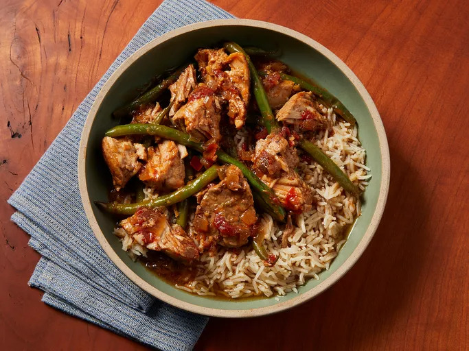

Home
How to Make Pork Sinigang

Credits: Allrecipes
Sinigang is a Filipino soup cooked with pork. Serve with rice and for additional sauce, use soy or fish sauce.
If you want to, you can add what Filipinos call gabi gabi, which is a small taro root. When peeled they look like potatoes,
You'll find a detailed ingredient list below:
Ingredients
- 1 tablespoon vegetable oil
- 1 small onion, chopped
- 1 teaspoon salt
- 1 (1/2 inch) piece fresh ginger, chopped
- 2 plum tomatoes, cut into 1/2-inch dice
- 1 pound bone-in pork chops
- 4 cups water, more if needed
- 1 (1.41 ounce) package tamarind soup base (such as Knorr®)
- ½ pound fresh green beans, trimmed
Directions
- Heat vegetable oil in a skillet over medium heat. Add onion; cook and stir until softened and translucent, about 5 minutes. Season with salt.
- Stir in ginger, tomatoes, and pork chops. Cover and reduce heat to medium-low. Turn the pork occasionally, until browned.
- Pour in water and tamarind soup base. Bring to a boil, then reduce heat and simmer until the pork is tender and cooked through, about 30 minutes.
- Stir in green beans and cook until tender.